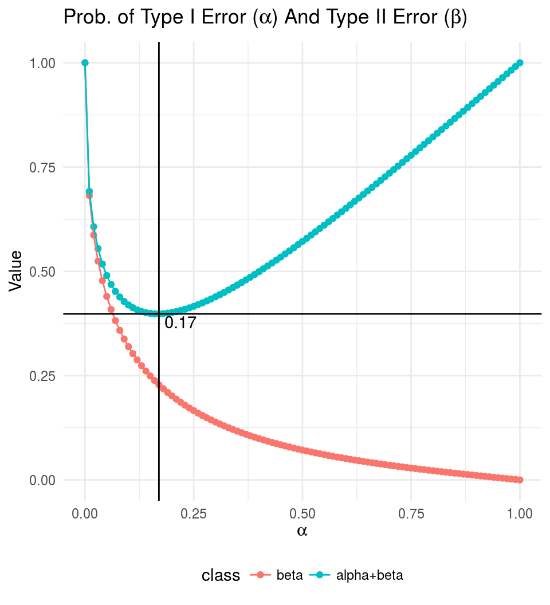
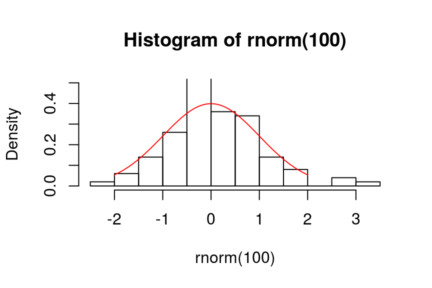
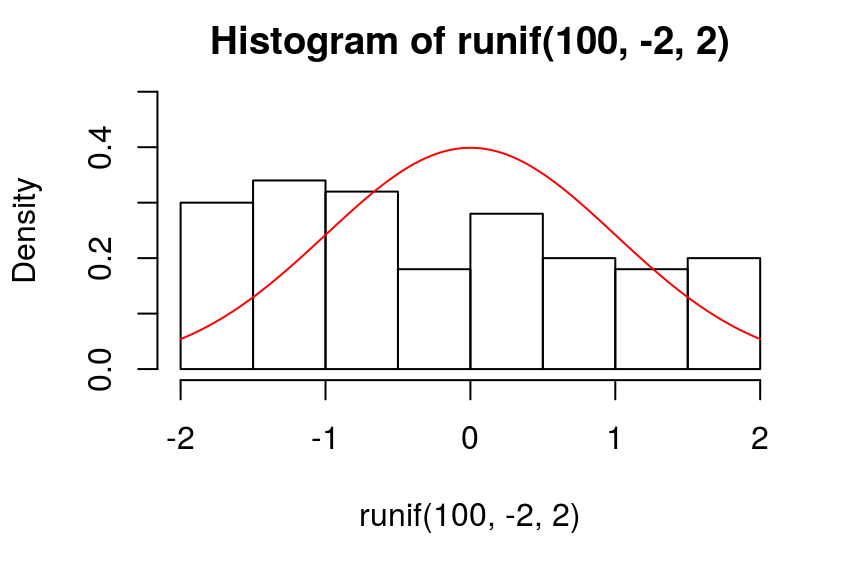
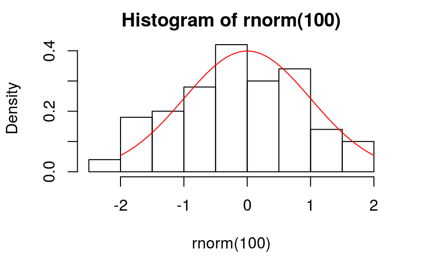
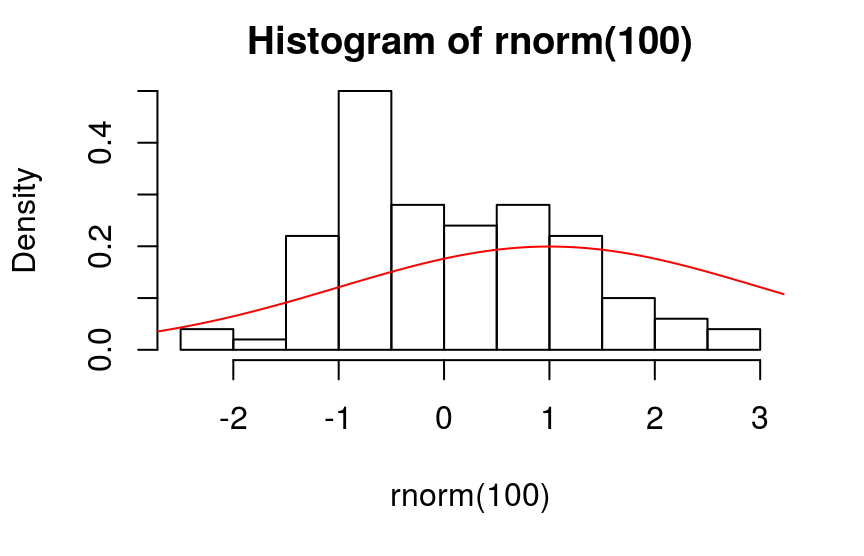
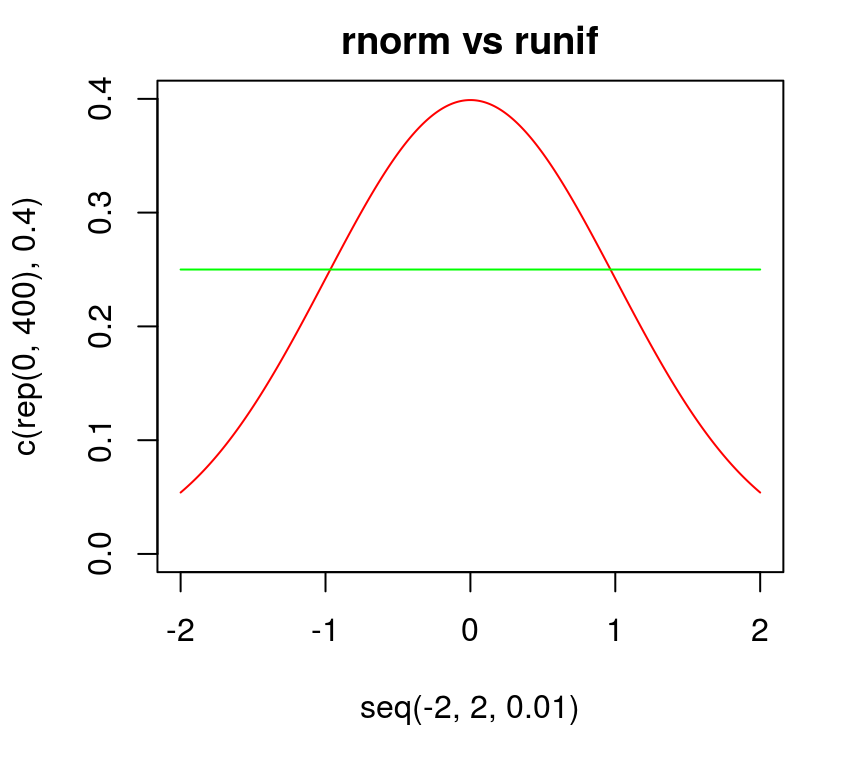
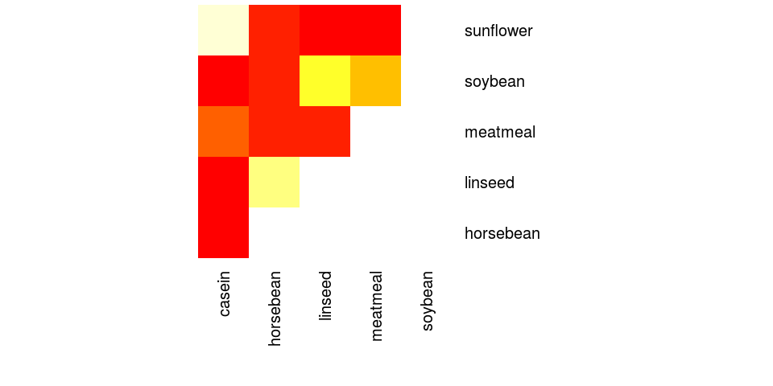
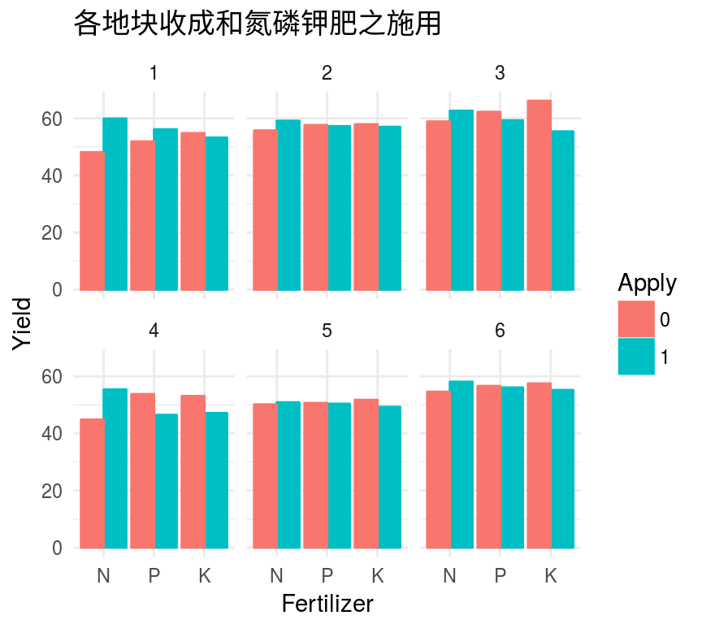
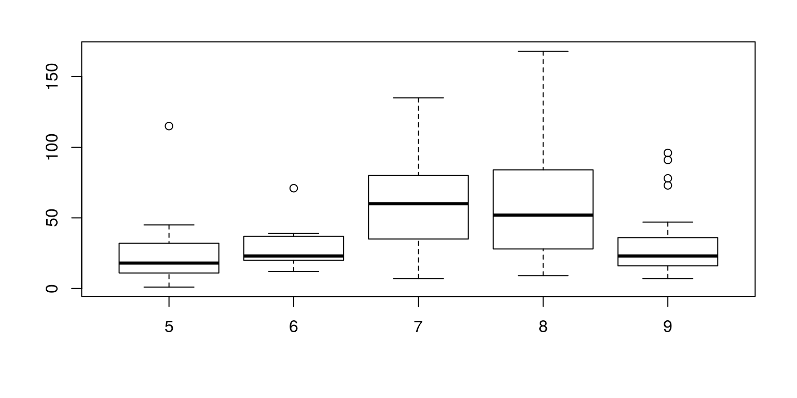

2017-05-18 21:03:11
目录
统计推断
什么是统计推断 (statistic inference)
统计学中，研究如何根据样本数据去推断总体数量特征的方法。 它是在对样本数据进行描述的基础上，对统计总体的未知数量特征做出以概率形式表述的推断。更概括地说，是在一段有限的时间内，通过对一个随机过程的观察来进行推断的。
– Wikipedia
- 总体 (population): 全中国公民的年收入
- 样本 (sample): 上海市民的年收入
- 问题: 上海市民的年收入是否比全国水平高?
- 统计推断: 通过对H0做假设检验，判断是否改为接受H1
- H0 (无效假设null hypothesis): “上海市民的年收入与全国水平相同”
- H1 (备择假设alternative hypothesis): “上海市民的年收入与全国水平不同”
参数估计 (parameter estimation)
用样本统计量的来估计相应总体参数，称为参数估计。
回答前面的问题，需要转化推断指标。如:假定收入服从正态分布，可以均数作为收入的估计。
- 点估计(point estimation): 用某一样本统计量的值来估计相应总体参数的值
- 通常要假定总体服从某种分布（如正态分布）
- 计算样本该分布的参数统计量（如算术均数、几何均数、标准差）
- 区间估计(inteval estimation): 以样本统计量的抽样分布（概率分布）为理论依据，按一定概率要求，由样本统计量的值估计总体参数值的所在范围
- 通常使用参数统计量的置信区间(confidence interval)来衡量
- 置信区间的宽度(可靠性)取决于置信度(1-\(\alpha\))，一般取95%
假设检验 (hypothesis testing)
假设检验是一种统计检验，用于确定样本数据中是否有足够证据来推断特定条件对总体是否为真。
基于“无罪推定”的原则，步骤：
- 列出H0(无效假设，希望拒绝的那个假设)和H1(备择假设，希望接受的那个假设)
- 根据问题和样本性质选择合适的统计方法 (样本性质的判定，同样是一次假设检验的过程)
- 计算 P 值: 当原假设为真时，比所得到的样本观察结果更极端的结果出现的概率
- P \(<\alpha\) –> 统计显著: 推翻无效假设，接受备择假设
- P \(\geq\alpha\) –> 统计不显著: 暂不能推翻无效假设
I类和II类错误
| 研究结论 \ 实际情况 | H0正确 | H0错误 |
|---|---|---|
| 拒绝H0 | I类错误(概率=\(\alpha\)) | 正确(概率=1-\(\alpha\)) |
| 接受H0 | 正确(概率=1-\(\beta\)) | II类错误(概率=\(\beta\)) |
- 两类错误此消彼长：样本量一定时，无法同时减小I类错误和II类错误的概率
- 样本量增加，统计效能(power)(1-\(\beta\))增加，则II类错误概率下降
- 出于审慎原则，通常对I类错误的容忍度更低
以t检验为例，假设样本量=100，效应大小为0.3
library(pwr)
alpha <- seq(0, 1, 0.01)
beta <- 1 - sapply(alpha, function(a) {
pwr.t.test(100, d=0.3, sig.level=a)$power})
df <- rbind(
data.frame(alpha, class="beta",
Value=beta),
data.frame(alpha, class="alpha+beta",
Value=alpha+beta))
dfmin <- c(alpha[which.min(alpha+beta)],
min(alpha+beta))
library(ggplot2)
ggplot(df, aes(alpha, Value, color=class)) +
geom_point() + geom_line() +
geom_vline(xintercept=dfmin[1]) +
geom_hline(yintercept=dfmin[2]) +
annotate("text", label=dfmin[1],
x=dfmin[1]+0.05, y=dfmin[2]-0.02) +
ggtitle(expression(paste(
"Prob. of Type I Error (",
alpha, ") And Type II Error (",
beta, ")"))) +
xlab(expression(alpha)) +
theme_minimal() +
theme(legend.position='bottom')

参数估计
点估计
均数
总体均值\(\mu\)的最小方差无偏估计为样本的均值\(\bar{x}\)
Edgar Anderson iris数据Sepal.Width的总体均数?
> x <- iris$Sepal.Width > sum(x)/length(x) # 或 > mean(x) 3.057333
方差
\[s^2=\frac{1}{n-1}\sum_{i=1}^{n}(x_i-\bar{x})^2\]
Sepal.Width的总体方差?
> sum((x-3.057333)^2)/(length(x)-1) # 或 > var(x) 0.1899794
区间估计
均数
总体方差已知
样本均数服从正态分布
\[z=\frac{\bar{x}-\mu}{\sigma/\sqrt{n}}\]
假设总体方差是0.1899794，Sepal.Width均数区间?
> mean(x) + qnorm(c(0.025, 0.975))*0.1899794/ + sqrt(length(x)) [1] 3.026931 3.087736
(通常情况)总体方差未知
样本均数服从t分布
\[\bar{x} \pm t_{n - 1, 1 - \alpha / 2}{\frac{s}{\sqrt{n}}}\]
> mean(x) + qt(p=c(0.025, 0.975), df=length(x))* + sd(x)/sqrt(length(x)) [1] 2.987014 3.127653
方差
\[[\frac{(n - 1) s^2}{\chi_{n - 1, \alpha/2}^{2}}, \frac{(n - 1) s^2}{\chi_{n - 1, 1 - \alpha / 2}^{2}}]\]
> (length(x)-1) * var(x) / + qchisq(c(0.025, 0.975), length(x)-1) [1] 0.2417372 0.1532698
检验指定分布
正态性检验: Shapiro-Wilk Test
样本量必须在3-5000之间
- H0: 样本服从正态分布
- H1: 样本不服从正态分布
> shapiro.test(rnorm(100))
Shapiro-Wilk normality test
data: rnorm(100)
W = 0.98802, p-value = 0.5099

> shapiro.test(runif(100, -2, 2))
Shapiro-Wilk normality test
data: runif(100, -2, 2)
W = 0.94369, p-value = 0.0003262

通用检验: Kolmogorov-Smirnov Test
- H0: 样本服从某类分布
- H1: 样本不服从某类分布
> ks.test(rnorm(100), "pnorm")
One-sample Kolmogorov-Smirnov test
data: rnorm(100)
D = 0.079472, p-value = 0.5528
alternative hypothesis: two-sided

- H0: 样本服从参数为…的某类分布
- H1: 样本不服从参数为…的某类分布
> ks.test(rnorm(100), "pnorm", 1, 2)
One-sample Kolmogorov-Smirnov test
data: rnorm(100)
D = 0.32728, p-value = 9.941e-10
alternative hypothesis: two-sided

通用检验(续): Kolmogorov-Smirnov Test
- H0: 两个样本分布相同
- H1: 两个样本分布不同
> x <- rnorm(50)
> y <- runif(30, -2, 2)
> ks.test(x, y)
Two-sample Kolmogorov-Smirnov test
data: x and y
D = 0.23333, p-value = 0.2264
alternative hypothesis: two-sided

单组或两组样本
单样本: 直接与总体参数比较
正态数据
- Student t检验 (
t.test)
> t.test(rnorm(100), mu=0)
One Sample t-test
data: rnorm(100)
t = -1.3261, df = 99, p-value = 0.1879
alternative hypothesis: true mean is not equal to 0
95 percent confidence interval:
-0.33597711 0.06679886
sample estimates:
mean of x
-0.1345891
非正态数据
- 正态变换后
t.test(一般不这样做) - 非参数检验: Wilcoxon秩和检验/Mann-Whitney U检验
> wilcox.test(rpois(1:100, 1), mu=0)
Wilcoxon signed rank test with continuity correction
data: rpois(1:100, 1)
V = 2016, p-value = 1.282e-12
alternative hypothesis: true location is not equal to 0两组正态样本
Step1: 方差齐性F检验
> x <- rnorm(100)
> y <- rnorm(100, 1)
> var.test(x, y)
F test to compare two variances
data: x and y
F = 0.79822, num df = 99, denom df = 99,
p-value = 0.2639
alternative hypothesis: true ratio of variances
is not equal to 1
95 percent confidence interval:
0.5370739 1.1863377
sample estimates:
ratio of variances
0.7982174
Step2: Student t检验 (t.test)
> t.test(x, y)
Welch Two Sample t-test
data: x and y
t = -5.7058, df = 195.54, p-value = 4.236e-08
alternative hypothesis: true difference in means is
not equal to 0
95 percent confidence interval:
-1.0780640 -0.5242426
sample estimates:
mean of x mean of y
0.2038993 1.0050526 两组非正态样本
- 非参数检验: Wilcoxon U检验
- 秩和检验
- 符号秩检验
> x <- rexp(1:200, 1)
> y <- rexp(1:200, 2)
> wilcox.test(x, y)
Wilcoxon rank sum test with continuity correction
data: x and y
W = 26324, p-value = 4.514e-08
alternative hypothesis: true location shift is not
equal to 0
- 正态变换后
t.test(不要过度变换)
> library(forecast)
> x1 <- BoxCox(x, lambda=0.3)
> y1 <- BoxCox(y, lambda=0.3)
> shapiro.test(x1) # p-value=0.1488
> shapiro.test(y1) # p-value=0.1542
> t.test(x1, y1)
Welch Two Sample t-test
data: x1 and y1
t = 5.9563, df = 380.44, p-value = 5.878e-09
alternative hypothesis: true difference in means is
not equal to 0
95 percent confidence interval:
0.3402813 0.6756506
sample estimates:
mean of x mean of y
-0.4456814 -0.9536474 多组样本
单因素方差分析 1. 方差齐性检验
chickwts数据集，不同饲料(feed)喂养后体重(weight)有无差别?
统计假设
- H0: 各饲料组体重都相同
- H1: 各饲料组体重不全相同
- H0: 各饲料组体重都相同
前置条件: 两饲料组样本方差齐不齐?
> bartlett.test(weight~feed, chickwts)
Bartlett test of homogeneity of variances
data: weight by feed
Bartlett's K-squared = 3.2597, df = 5, p-value = 0.66
- 结论
各组体重方差齐
单因素方差分析 2. One-way ANOVA
aov
> summary(aov(weight~feed, chickwts))
Df Sum Sq Mean Sq F value Pr(>F)
feed 5 231129 46226 15.37 5.94e-10 ***
Residuals 65 195556 3009
---
Signif. codes: 0 ‘***’ 0.001 ‘**’ 0.01 ‘*’ 0.05 ‘.’ 0.1 ‘ ’ 1
- 或
anova(必须配合lm)
> anova(lm(weight~feed, chickwts))
Analysis of Variance Table
Response: weight
Df Sum Sq Mean Sq F value Pr(>F)
feed 5 231129 46226 15.365 5.936e-10 ***
Residuals 65 195556 3009
---
Signif. codes: 0 ‘***’ 0.001 ‘**’ 0.01 ‘*’ 0.05 ‘.’ 0.1 ‘ ’ 1
均数的多重比较(1)
哪个饲料组体重更大?哪个更小?

多重比较必须修正\(\alpha\)，否则会导致I类错误增高
- 方法1:
TukeyHSDTukeyHSD(x, which, ordered = FALSE, conf.level = 0.95, ...)
- 方法2:
pairwise.t.testpairwise.t.test(x, g, p.adjust.method = p.adjust.methods, pool.sd = !paired, paired = FALSE, alternative = c("two.sided", "less", "greater"), ...)- p.adjust.method: c("holm", "hochberg", "hommel", "bonferroni", "BH", "BY", "fdr", "none")
均数的多重比较(2)
> TukeyHSD(aov(weight~feed, chickwts))
Tukey multiple comparisons of means
95% family-wise confidence level
Fit: aov(formula = weight ~ feed, data = chickwts)
$feed
diff lwr upr p adj
horsebean-casein -163.383 -232.347 -94.42 0.00000
linseed-casein -104.833 -170.587 -39.08 0.00021
meatmeal-casein -46.674 -113.906 20.56 0.33246
soybean-casein -77.155 -140.517 -13.79 0.00836
sunflower-casein 5.333 -60.421 71.09 0.99989
linseed-horsebean 58.550 -10.413 127.51 0.14133
meatmeal-horsebean 116.709 46.335 187.08 0.00011
soybean-horsebean 86.228 19.542 152.91 0.00427
sunflower-horsebean 168.717 99.753 237.68 0.00000
meatmeal-linseed 58.159 -9.073 125.39 0.12770
soybean-linseed 27.678 -35.684 91.04 0.79328
sunflower-linseed 110.167 44.412 175.92 0.00009
soybean-meatmeal -30.480 -95.375 34.41 0.73913
sunflower-meatmeal 52.007 -15.224 119.24 0.22070
sunflower-soybean 82.488 19.123 145.85 0.00388
> with(chickwts, pairwise.t.test(weight, feed))
Pairwise comparisons using t tests with pooled SD
data: weight and feed
casein horsebean linseed meatmeal soybean
horsebean 2.9e-08 - - - -
linseed 0.00016 0.09435 - - -
meatmeal 0.18227 9.0e-05 0.09435 - -
soybean 0.00532 0.00298 0.51766 0.51766 -
sunflower 0.81249 1.2e-08 8.1e-05 0.13218 0.00298
P value adjustment method: holm

多因素方差分析
> summary(aov(yield~N*P*K, npk))
Df Sum Sq Mean Sq F value Pr(>F)
N 1 189.3 189.28 6.161 0.0245 *
P 1 8.4 8.40 0.273 0.6082
K 1 95.2 95.20 3.099 0.0975 .
N:P 1 21.3 21.28 0.693 0.4175
N:K 1 33.1 33.14 1.078 0.3145
P:K 1 0.5 0.48 0.016 0.9019
N:P:K 1 37.0 37.00 1.204 0.2887
Residuals 16 491.6 30.72
---
Signif. codes: 0 ‘***’ 0.001 ‘**’ 0.01 ‘*’
0.05 ‘.’ 0.1 ‘ ’ 1
- 各种肥料的交互作用不明显
- 氮肥对收成影响显著

协方差分析(ANCOVA)
将那些很难人为控制的控制因素作为协变量，在排除协变量对观测变量影响的条件下，分析控制变量对观测变量的作用， 从而更准确地评价控制因素。
> summary(aov(yield~N*P*K+block, npk))
Df Sum Sq Mean Sq F value Pr(>F)
N 1 189.3 189.28 12.26 0.0044 **
P 1 8.4 8.40 0.54 0.4749
K 1 95.2 95.20 6.17 0.0289 *
block 5 343.3 68.66 4.45 0.0159 *
N:P 1 21.3 21.28 1.38 0.2632
N:K 1 33.1 33.14 2.15 0.1687
P:K 1 0.5 0.48 0.03 0.8628
Residuals 12 185.3 15.44
---
Signif. codes: 0 ‘***’ 0.001 ‘**’ 0.01 ‘*’
0.05 ‘.’ 0.1 ‘ ’ 1

非参数检验: Kruskal-Wallis Test
> kruskal.test(Ozone ~ Month, data = airquality)
Kruskal-Wallis rank sum test
data: Ozone by Month
Kruskal-Wallis chi-squared = 29.267, df = 4, p-value = 6.901e-06

Thank you!